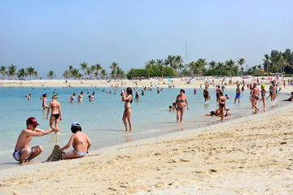
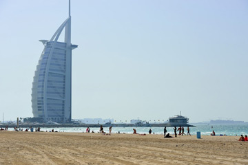
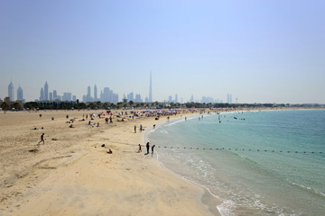
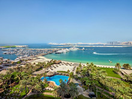
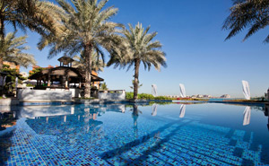
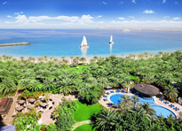

Cal tenir en compte que gran part de la costa està presa per hotels amb platja privada, de manera que
si no esteu allotjats en un d’aquests, teniu dues opcions: buscar una platja pública o pagar algun club de platja.
Inaugurat el 1994, protegit amb una verda vegetació, amb una bonica platja d’aigües tranquil·les i sorra clara. El parc compta amb una superfície de més de 100 hectàrees que inclouen nombroses zones verdes, dutxes, barbacoes, zones de jocs per als nens, quioscos, piscines i cabanes de lloguer. A causa de les costums del país, els dimecres només es permet l’entrada a les dones i nens.
 És un agradable parc amb una concorreguda platja que comprèn un extens terreny de frescos jardins compost per agradables racons amb barbacoes, zones per a nens i alguns bars. Va ser inaugurat el 1989.
És un agradable parc amb una concorreguda platja que comprèn un extens terreny de frescos jardins compost per agradables racons amb barbacoes, zones per a nens i alguns bars. Va ser inaugurat el 1989.
La platja d’Umm Suqeim té el gran atractiu d’oferir les millors vistes de l’emblemàtic Burj A l’Arab, fent d’ella una de les platges més populars de Dubai. Cada dia, en caure la tarda, la platja es converteix en l’escenari digne d’una postal en què la grandesa del Burj A l’Arab.
També coneguda com Russian Beach causa de la gran quantitat de turistes russos que la freqüenten, que es troba localitzada en les rodalies de Dubai Downtown, molt a prop de Jumeirah Beach Park. La platja compta amb passejos asfaltats, hamaques, para-sols i dutxes, però no disposa d’espais ombrejats de zones verdes.
Les platges privades a Dubai no són per a ús exclusiu dels clients de cada hotel, qualsevol turista que vulgui utilitzar-les pot fer-ho comprant un passi diari.
Aquest complex de luxe i de 5 estrelles disposa de diverses piscines situades enmig de jardins exuberants i 5 llocs per menjar i llocs d’oci.
RIVA Beach Club és una de les platges privades més distingides causa de la seva exquisida ubicació a la Palmera Jumeirah. Una platja privada artificial que ofereix una tranquil·litat envejable.
Sheraton Jumeirah Beach Club es caracteritza per oferir una boníssima atenció i per donar-nos la possibilitat de passar una tarda platja meravellosa sense moure’ns dels llocs més representatius d’aquesta ciutat.